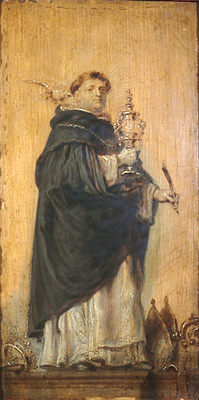

|  | |
|---|---|
| CORPUS THOMISTICUM | |
| CATALOGI ANTIQUISSIMI OPERUM THOMAE DE AQUINO |
|
| collecti ab Enrique Alarcón et instructi ad Universitatis Studiorum Navarrensis aedes Pompaelone ab MMIV A.D. |
|
Bibliographia generalis selecta
Taxationes librorum Universitatis Parisiensis
Circa 1275 A. D.
Praetium librorum taxatum ab Universitate Parisiensi
A. D. 1304
Exemplaria Andree de Senonis taxata
Catalogus princeps: Exemplares
Circa 1297 A. D.
Opera que edidit venerandus frater t. de aquino
Saeculo XIII exeunte vel XIV ineunte
Opera thome de aquino quorum exempla sunt parisius
Intra annos 1307 et 1323
Nicholaus Trevet, Annales sex regum Angliae
A. D. 1319
Bartholomeus de Capua, Testimonium in processu canonizationis Neapoli
Collectiones opusculorum priores
Saeculo XIII exeunte
cod. Napoli, Bibl. Nazionale VII.B.16 [=N¹]
Circa 1282 A. D.
cod. olim Metz, Bibl. Municipale 1158 [=Me¹]
Saeculo XIII exeunte
cod. Paris, Bibliothèque Nationale lat. 14546 [=P¹]
Saeculo XIII exeunte vel XIV ineunte
cod. Pommersfelden, Gräflich Schönbornschen Bibliothek 90/2656 [=Po¹]
Saeculo XIV ineunte
cod. Cambridge, Corpus Christi College Library 35 [=C¹]
Saeculo XIV ineunte
cod. Paris, Bibl. Sainte-Geneviève 238 [=P²]
Circa 1320 A. D.
cod. Biblioteca Apostolica Vaticana, fondo mss. Vaticani Latini 807 [=V¹]
Saeculo XIV ineunte
cod. Venezia, Biblioteca Marciana, fondo antico latino 128 [=Ve¹]
Saeculo XIV mediato
cod. Toledo, Biblioteca del Cabildo, 19-15 [=T¹]
Saeculo XIV mediato
cod. Biblioteca Apostolica Vaticana, fondo mss. Ottoboniani Latini 198 [=V5]
Saeculo XIV mediato
cod. Bordeaux, Bibliothèque Municipale 131 [=Bd]
Saeculo XIV mediato
cod. Bologna, Biblioteca Universitaria 1655²¹ [=Bo¹]
Scriptores de vita Thomae de Aquino priores
Intra mensem Maii anni 1313 et finem anni 1316
Tholomeus de Luca, Historia ecclesiastica nova
Intra annos 1317 et 1323
Guillelmus de Tocco, Ystoria sancti Thome de Aquino
Intra mensem Augusti anni 1323 et Iunii anni 1326
Bernardus Guidonis, Vita Sancti Thomae Aquinatis
Intra annos 1323 et 1344
Petrus Rogerii, Sermo de S. Thoma de Aquino
Circa annum 1330
Iohannes de Columna, Liber de viris illustribus
Catalogi conscripti ex Chronica vel Tabula scriptorum Ordinis Praedicatorum circa 1312 confecta
Circa annum 1350
Circa 1371 A. D.
Intra annos 1393 et 1400
Laurentius Pignon, Catalogus fratrum spectabilium Ordinis Praedicatorum
Circa annum 1506
Albertus Castellanus, Brevissima chronica
Ante annum 1350
cod. Biblioteca Apostolica Vaticana, fond. Vat. lat. 813
Saeculo XIV
Circa annum 1400
Willelmus Sudbery, Tabula super libros Sancti Thomae
Anno 1413
Ludovicus de Valle Oleti, Tabula beati Thome de Aquino